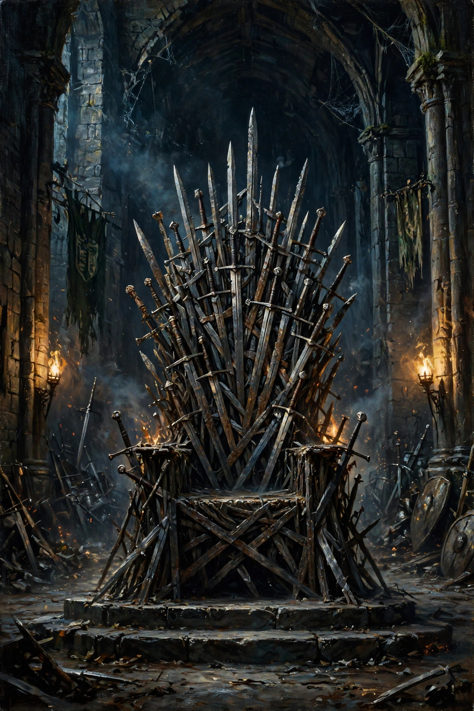

From Wikipedia, the free encyclopedia
| A Game of Thrones | |
 First edition cover of A Game of Thrones (1996) | |
| Author | George R. R. Martin |
| Series | A Song of Ice and Fire, book 1 |
| Genre | Epic fantasy |
| Publisher | Bantam Spectra (US); Voyager (UK) |
| Publication date | August 1, 1996 |
| Pages | 694 (US hardcover) |
| Awards | Locus Award for Best Fantasy Novel (1997) |
| Followed by | A Clash of Kings (1998) |
A Game of Thrones is an epic fantasy novel by American author George R. R. Martin. It was published on August 1, 1996, as the first volume of the series A Song of Ice and Fire. The novel won the 1997 Locus Award for Best Fantasy Novel and was nominated for the 1997 Nebula Award and the 1997 World Fantasy Award. The novella Blood of the Dragon, comprising the Daenerys Targaryen chapters, won the 1997 Hugo Award for Best Novella.
The novel introduces the continent of Westeros, divided among noble houses vying for control of the Iron Throne of the Seven Kingdoms; the exiled princess Daenerys Targaryen across the sea in Essos; and the Night's Watch, guarding the realm's northern border against an ancient enemy returning after thousands of years. The story is told through the rotating third-person-limited viewpoints of nine characters.
In the Seven Kingdoms of Westeros, Eddard "Ned" Stark, lord of Winterfell, is appointed Hand of the King to his old friend Robert Baratheon after the sudden death of the previous Hand, Jon Arryn. At King's Landing, Ned investigates the Baratheon succession and discovers that Robert's children are in fact the offspring of Queen Cersei Lannister and her twin brother Jaime. Before he can act, Robert dies in a hunting accident; Ned is betrayed, arrested for treason, and — despite a promised pardon in exchange for a public confession — executed on the orders of the boy-king Joffrey. The killing triggers a civil war, the War of the Five Kings, as Ned's son Robb is proclaimed King in the North and Robert's brothers Stannis and Renly press their own claims.
Meanwhile Robert's master of whisperers and others play the "game of thrones" of court intrigue; Tyrion Lannister, the queen's dwarf brother, is seized by Ned's wife Catelyn, escapes, and is later appointed acting Hand. In the east, the exiled Viserys Targaryen marries his sister Daenerys to the Dothraki warlord Khal Drogo in hopes of gaining an army. Viserys is killed by Drogo; after Drogo's death, Daenerys hatches three dragon eggs — dragons having been extinct for a century and a half — in his funeral pyre. In the far north, Ned's bastard son Jon Snow joins the Night's Watch at the Wall and learns that the wildlings are fleeing a greater danger, the return of the Others.
The novel's chapters are headed by nine viewpoint characters: Eddard Stark, Catelyn Stark, Sansa Stark, Arya Stark, Bran Stark, Jon Snow, Tyrion Lannister, Daenerys Targaryen, and (in the prologue) Will, a ranger of the Night's Watch. The limited perspectives create dramatic irony and unreliable impressions that recur throughout the series.
Reviews praised the novel's characterisation, moral ambiguity and realistic treatment of violence and politics within a fantasy setting. Sales grew steadily with each sequel, and the series reached a mass readership after HBO adapted it as the television series Game of Thrones, whose first season (2011) adapts this novel closely. The book has since sold millions of copies worldwide and been translated into dozens of languages.